Project Highlights
Network Security for Websites in China
Join me in this brief video presentation as I delve into the what I learned in querying over one million websites to analyze and extract critical insights about network security.
This paper explores the tools, methodologies, results, and conclusions of this study — offering valuable insights and a comprehensive examination of the findings. Give it a look!
Summary
This project was inspired by the discovery of Why No HTTPS, a website that catalogs popular platforms delivering content over unencrypted connections. A substantial number of these websites are hosted in China, raising questions about the state of secure web protocols in the region.
The goal of this research was to examine the adoption and implementation of HTTPS and SSL certificates in online services based in China. By analyzing trends in secure web traffic, this project explored the broader implications of utilizing—or neglecting—the TLS protocol, affecting both servers and clients interacting with these services.
For a deeper dive into prior studies, methodology, results, and conclusions, refer to the video presentation and academic paper shown above. Additional resources are available below, with further insights into this Computer Network Security course outlined in the Coursework section of this page.
See More From This Project
Video Presentation
Academic Paper
Presentation Slide Deck
Modeling and Simulation Ticket to Ride
My incredible teammate, Rachel, demonstrates the capabilities of our Ticket to Ride Simulation program in MATLAB, showcasing the precision and innovation that make this project truly stand out.
This academic paper, written collaboratively by my teammates and me, provides an in-depth exploration of our innovative approach to developing this versatile simulation tool.
Summary
This group project provided a unique opportunity to explore the intersection of simulation and game theory through the popular board game Ticket to Ride. In this game, players compete to build the most extensive train network across the United States, requiring strategic decision-making to win. However, with multiple strategies available, one key question arises: which approach is the most effective?
Our research aimed to develop an accurate model of Ticket to Ride, incorporating all essential gameplay elements—train pieces, cards, routes, turns, and scoring. To test different strategies, we programmed artificial agents with distinct decision-making processes and ran hundreds of simulations where they competed against one another. By analyzing performance metrics, we identified the most successful, reliable, and complementary strategies, offering valuable insights into optimal gameplay.
For a deeper understanding of our methodology, findings, and conclusions, refer to the video presentation and academic paper shown above. Additional resources are available below, with further context into this Modeling and Simulation course available in the Coursework section of this page.
See More From This Project
Video Presentation
Academic Paper
Source Code Original Repository on Georgia Tech GitHub Repository
Source Code Mirror Repository
Computer Vision Change Detection
 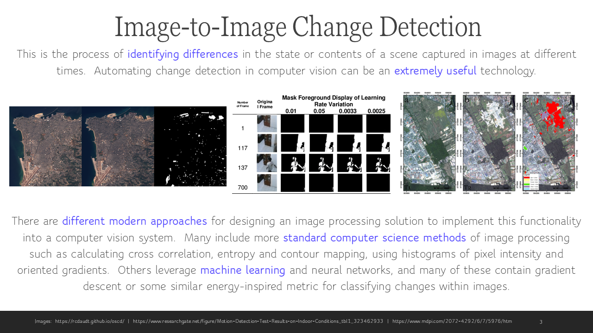
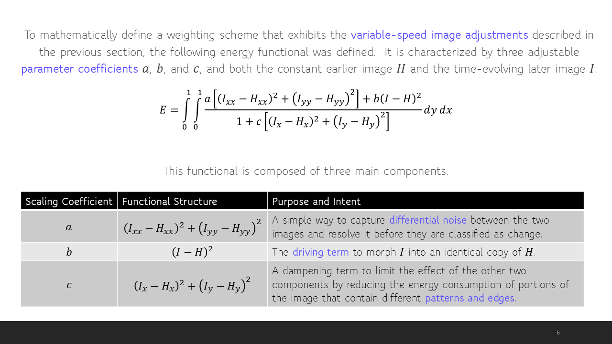
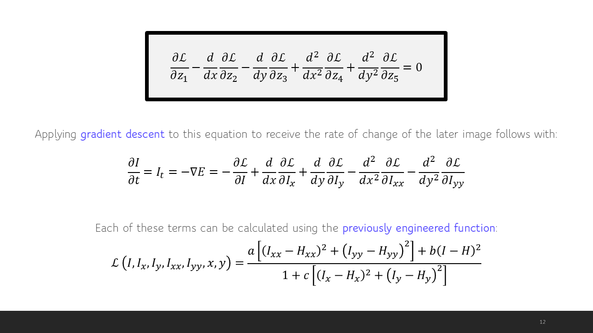
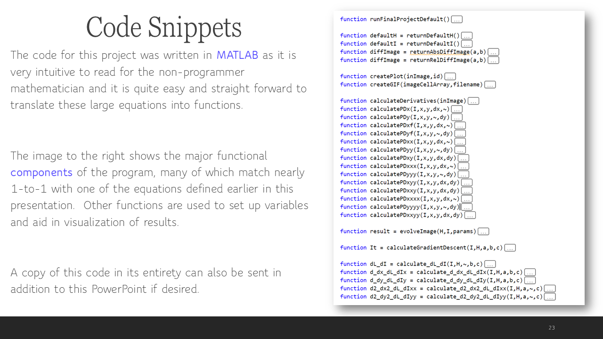
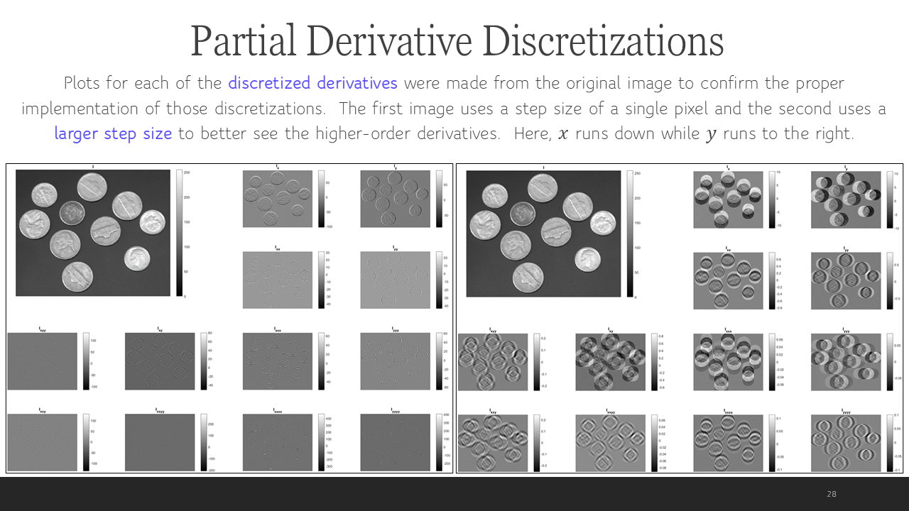
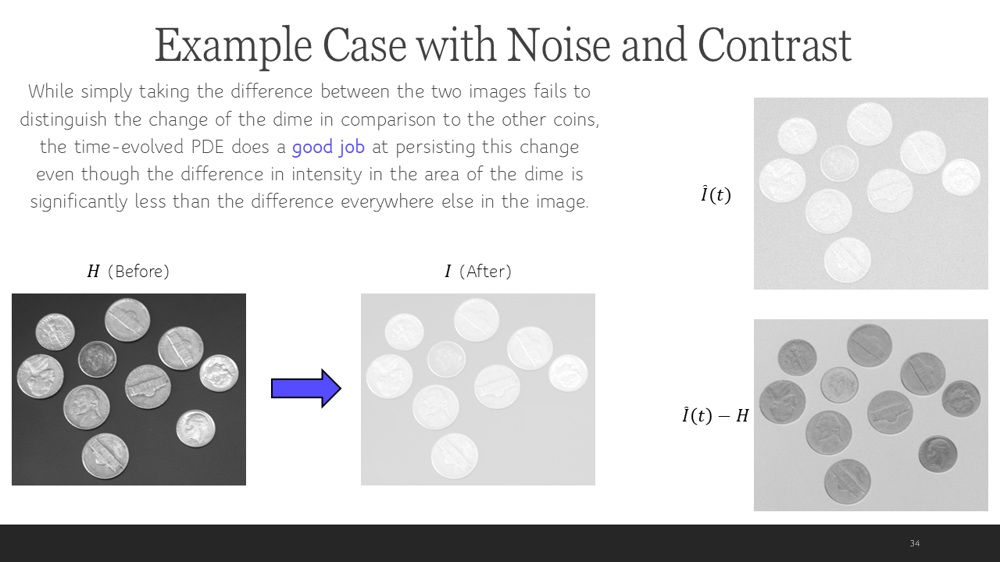
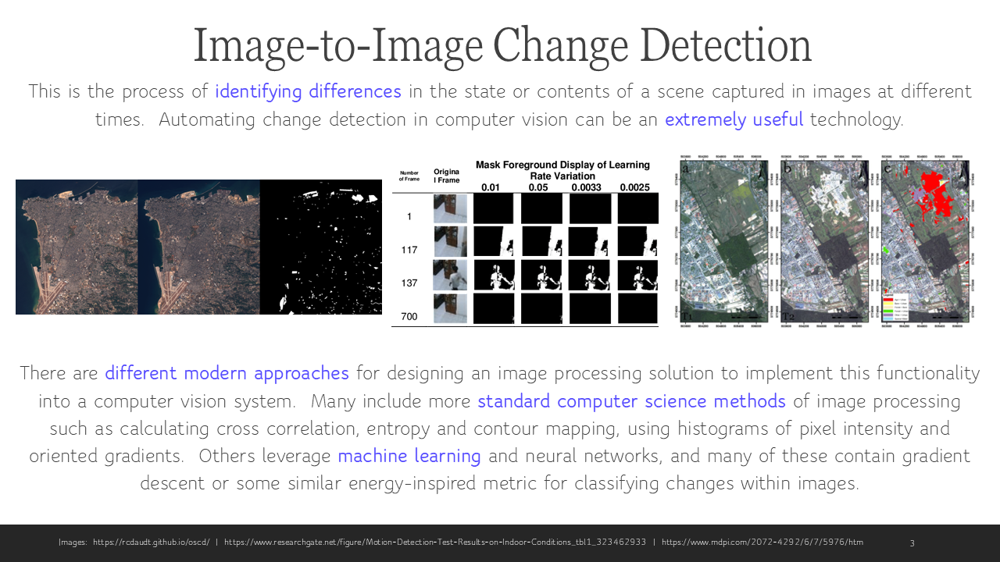
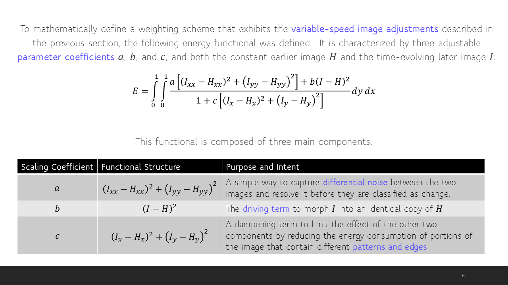
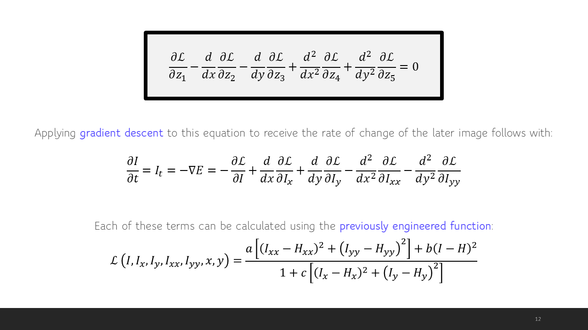
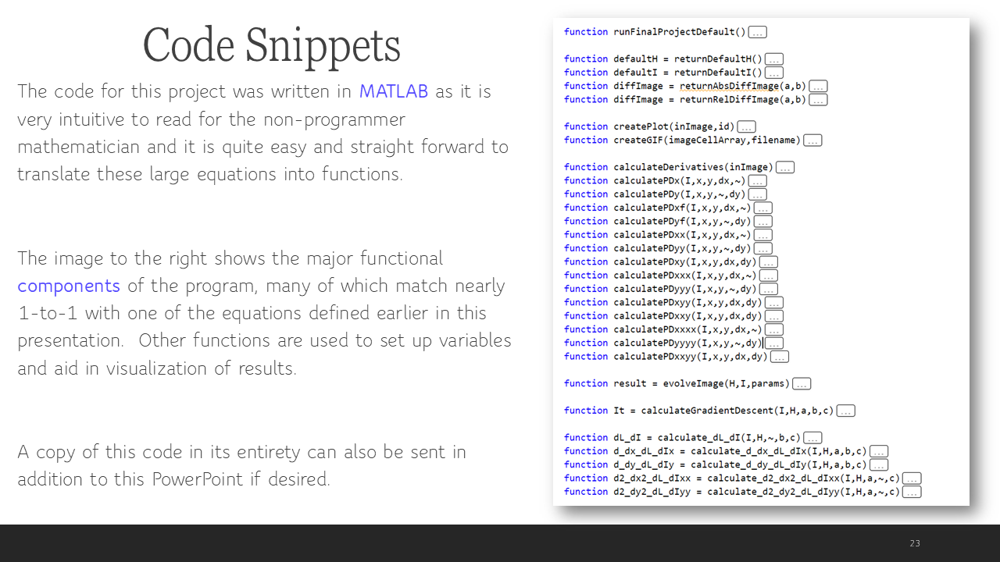
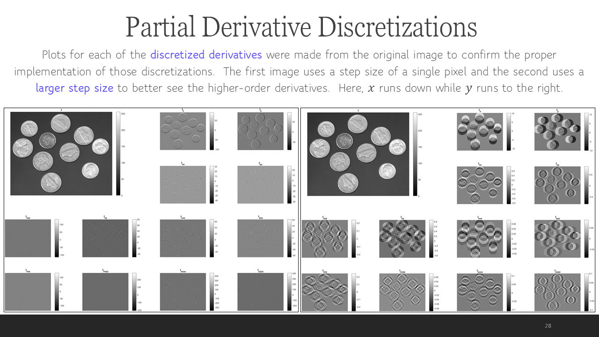
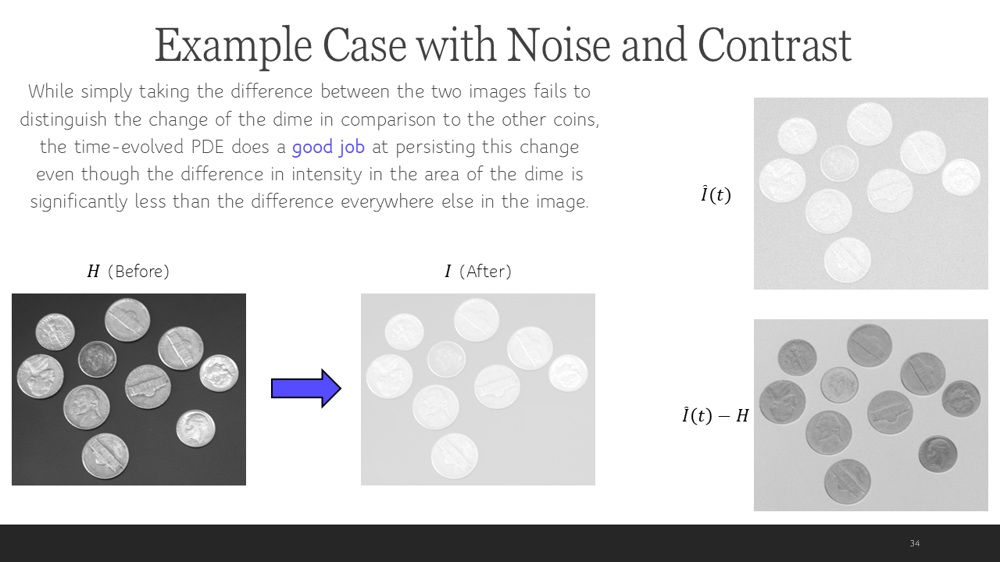
Summary
This project explores cutting-edge techniques in image change detection, leveraging partial differential equations to refine computer vision capabilities. By analyzing two images captured at different times, the algorithm intelligently filters out incidental variations while emphasizing significant transformations within the scene. With an advanced weighting system, it enhances the later image to reveal persistent patterns, making this approach a powerful tool for applications in surveillance, medical imaging, and environmental monitoring.
The research began with establishing the necessary mathematical foundations, formulating a multivariate, second-order Euler-Lagrange equation, and computing the relevant partial derivatives for the analyzed energy functional. These mathematical principles were then implemented in MATLAB, allowing rigorous testing of the algorithm on example imagery.
For a deeper dive into the methodology, calculations, experimentation, and conclusions, refer to the brief slide preview above. A full version of the project presentation is available below, and further description of the topics covered within the PDEs for Image Processing and Computer Vision course are present within the Coursework section of this page.
See More From This Project
Full Slide Deck Presentation